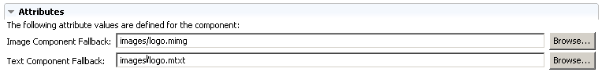

In most component editors, you can specify fallback components that MCS will use as replacements if it fails to locate a device variant in a component referred to in your XDIME code. The exceptions are the script and the rollover image components.
You choose fallbacks from components that you have already defined, either in the policy wizard when you add a new component, or in the attributes section of the editor. Different components allow varying numbers and types of fallback. Refer to Component attributes for details.

MCS handles fallback for different components in a broadly similar way.
Note: If you define a fallback text component for a link, MCS uses it instead of generating a link without applying any special formatting.
Related topics
Developing MCS policies
Component attributes